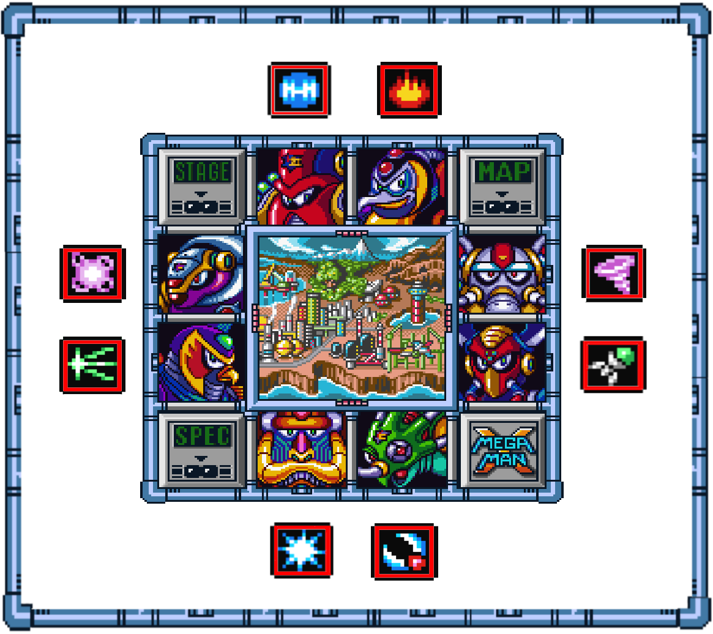
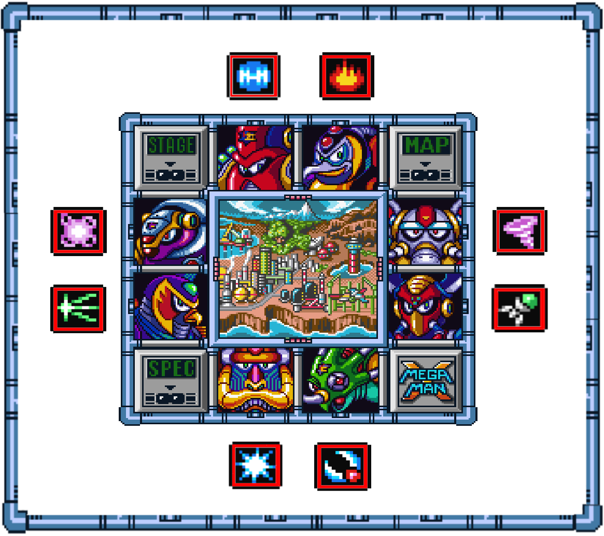
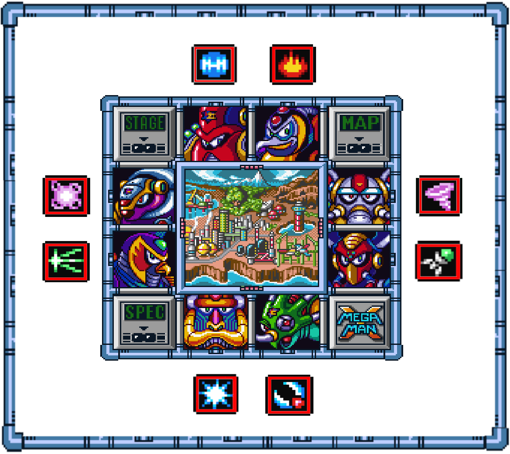

Megaman X is an action platform video game where you have different stages that you can Freely pick. Your character evolves and becomes stronger by defeating bosses and finding secret powerups hidden all over the stages. After beating all bosses, you will go to the enemy castle, Sigma, where you will need to defeat all the bosses once again, fight against new sigma’s allies and confront him in a final battle.
There’s different stages that you can pick freely. Each stage has checkpoints, hidden power ups, and a boss. Once you defeat the boss, you will learn its ability as a sub weapon. Other bosses are vulnerable to these sub weapons, so the point is to defeat the bosses in an order that you can use the weapon they’re weak at.
Beating the bosses will also affect other stages, making them easier to beat.
There’s three kinds of POWER UPS you can find all over the stages. These are not required to beat the game. You can keep the power ups even if you don’t beat the boss.
ARMOR PARTS
These improve your armor. They will give you new skills, like dash, defense, better buster and a helmet. These will make a huge difference in the game, giving you a lot of advantage, and they’re required to find other power ups.
HEARTS
These increase your energy bar. There’s a total of 8 hearts.
SUB TANKS
The sub tank is an item you keep in your inventory. It refills your energy bar once you use it. You can use any time in the game. You have access to it in the pause menu. Once you use it, it will become completely empty. You can refill the sub tanks killing enemies and picking up the energy they drop.
Boss sub weapons and armor parts are required to find the power ups. Once you beat the boss of a stage, you can exit that stage on the pause menu,
making the backtrack a lot faster.
Once you get the arm upgrade, you can charge the sub weapon while holding the attack button while holding a sub weapon, until megaman becomes pink. Each sub weapon charged does a different ability and it’s much stronger. Some are required to pick up certain power ups.
If you collect every single powerup in the game, and defeat all the bosses, , you can unlock the most powerful weapon of the game, the hadouken, which kills everything in one hit. It’s the same as the hadouken in street fighter.
Enemies in this game are fixed, which means they’re always in the same spot.
again if you scroll the screen a little bit. They drop energy and sub weapon energy, which fill your energy bar and weapon energy bar. You can move back and forth to spawn the enemies again, to farm energy or energy weapon. They have different drop rates, but in general, small enemies drop more often.
Every boss has a few movesets, even though you only learn one sub weapon. In which order they do the abilities is RNG, which means that it’s random what they will do next.
There’s also minibosses in certain stages. Beating them could affect the scenario, opening up secret paths or unlocking secrets. You can also open paths interacting with the scenario, like shooting walls or breaking rocks.
After defeating all the bosses, you will unlock sigma stages. There’s three of them. You will have to fight all the bosses again through the stages, and new bosses. The new bosses are also vulnerable to sub weapons, but you won’t get any new sub weapon out of them. Sometimes they can have two vulnerabilities. Sigma is ONLY vulnerable to r. shield
The game has lifes, and infinite continues. You can have a max. of 9 lives. Once you die, you will respawn at the checkpoint. If you run out of lifes, you will have to try the entire level again. As I said, you still keep all the power ups you found through the stage. You can find lifes laying down in stages, or you can get them from killing certain enemies. The lives you find laying in stages will respawn
again if you re-enter the stage. There’s an enemy at the armadillo stage (the bat that looks different from the rest) that has a very high life drop, so you can go back and forth to spawn it over and over and farm lives there.
There’s a password system. If you soft reset, your latest password will be introduced automatically when you press password on the main menu.
You can create passwords with the requirements you would like with the Password Generator
It is possible to get hadouken with a specific password: 2653-3848-7587 holding L R X 🡻 when you press start. The hadouken is not salvable for most passwords
TIPS & TRICKS
First off, on the option menu, change the dash to a comfortable button (like R).
Dash and shoot deals TWO DAMAGE. This only works with the normal shot, it doesn’t work with charged attacks.
There’s an armor upgrade that reduces the damage by 50%. I recommend picking it early in the game. (Check power ups & locations for info).
If you get stuck or think the game is too difficult, you can go to other stages to collect power ups since you keep the power up even if you don’t beat the boss.
Dash and jump makes megaman go really far. This can be used to reach high up or far platforms to discover secrets where powerups are. I will show you everything you need in the route below.
You can press the dash button while jumping on a wall too. This will make your jump reach higher, so you can cheese and get items that are
in higher spots, or even skip certain parts of the game, like the platform spot at sigma 1, climbing the wall instead.
Pressing dash while jumping on walls is very good to dodge bosses.
Never stand too close to bosses while hitting them, because they can get pushed towards you and deal a huge amount of damage
The arm upgrade gives you the power to charge the sub weapons. There’s two sub weapons that charged gives you a defense ability, these are:
The chameleon charged, which gives you invulnerability for a decent amount of time.
And the armadillo charged. It kills small enemies to touch. It’s unlimited, but it breaks if you collide with a bigger enemy. These two are VERY strong since it makes you invulnerable.
Every boss is vulnerable to a sub weapon, so use them against bosses. You will notice when the boss is vulnerable because it will do a special animation, or blink. You can check the weaknesses below.
Every enemy is also vulnerable to a sub weapon. I will show you a few quick tips on weapons now, but you can check weapon usage in more detail later.
Tornado gives good coverage in front of you and it’s very strong against big enemies. As long as you follow the tornado, you will kill everything that comes towards you.
Fire will kill everything around you very quickly. It’sstrong against big and small enemies
and it’s very helpful in small tunnels that are crowded.
Sometimes ignoring enemies and jumping over, leaving them behind, or ignoring them, is a much better option than trying to kill them.
The same applies if you get hit. You can take advantage of the i-frames to make it past a troublesome enemy
You can use the i-frames to walk on spikes, or avoid getting killed by spikes.
Enemies drop energy and weapon energy. They respawn if you leave them offscreen, so you can abuse this to get more energy. I recommend getting as many lives as possible, and always fill all the sub tanks before the stages.
HP/LIFE FARM
There’s a lot of bats at the beginning of the armadillo's stage that you can farm if you keep walking back and forth. You can help yourself with the armadillo shield to make it a little bit faster.
There’s also a special bat at armadillo stage that looks different from the rest, that has a high life drop rate. Just go back and forth over and over to kill it and pick up all the lifes.
Before sigma final boss, there’s these little holes on the wall where little worms come out. Use the armadillo shield and slide on the hole to pick up the drops
Take advantage of the screen:
If there’s a lot of incoming enemies, scroll the screen little by little. You can always shoot while jumping to the next platforms to kill possible incoming enemies even if you don’t know there will be enemies, preventing surprises.
If you are holding a subweapon, you can press both weapon switch buttons at the same time to go back to the buster.
But if you are too slow, you can always open the menu with the start button, and switch weapon
You need to walk on a platform to be able to dash. Double tap direction makes megaman dash, be careful with this while being on platforms.
POWER UPS & LOCATIONS
ARMOR PARTS
DASH
Location: Chill penguin
Necessary:
Dash is the first upgrade we will go for since it’s necessary to find the rest of the upgrades. It’s extremely helpful for everything, dodging, moving fast, reaching other platforms.. It’s in the way at chill penguin’s. This is the only power up that you can’t skip.
ARMOR (DEFENSE)
Location: Sting chameleon
Necessary: Dash
You will take 50% less damage once you pick the armor upgrade. It’s extremely good for beginners so you can take a lot of hits, that’s why we will pick it in the early game. It’s located up that green wall. A green robot miniboss will appear. Defeat it and the capsule will appear.
HELMET
Location: Storm Eagle
Necessary: Dash
It’s an upgrade for the head that allows you to crash blocks above you, opening secret paths where other upgrades are hidden. When you get to the long metallic wall, it’s hidden behind the fire wall. You only need to shoot the wall, it doesn’t matter the weapon.
ARM
Location: Flame mammoth
Necessary: Dash + Helmet
You can charge the buster for longer until you become pink, and release a very strong and wide shot that deals a lot of damage. It allows you to charge sub weapons. If you reach the blocks but fall, you can’t pick it and you will have to re-do the stage to have another chance to pick it up.
HADOUKEN
Location: Armored Armadillo
Necessary: All upgrades + subweapons
You need all the enemies defeated, and all the upgrades. You need to ride the last cart and jump high enough at the end of the travel.
You need to see the energy drop 4 up there times , and the last time you have to be full HP to make the capsule appear.
The hadouken is not salvable for most passwords.
It is possible to get hadouken with a specific password: 2653-3848-7587 holding L R X 🡻 when you press start.
Then I recommend you to check HADOUKEN at the end of the route for a more detailed explanation ofS how to get it.
HOW TO DO A HADOUKEN
You have to press down diagonal and the direction you want the hadouken to go, and then press Y.
You can buffer a hadouken if you hold Y while crossing a boss door, and once the boss fight starts,press 🡻 🡾 🡺 and then release the Y button. This makes it a little bit easier to guarantee the hadouken.
HEARTS
Location: Storm Eagle
Necessary: Dash
At the beginning of the level, get on the platform and when it reaches the top, dash jump to the left and you will land on the platform where the heart lays.
Location: Spark Mandrill
Necessary: Dash
After that turtle enemy, before climbing downstairs, there’s a wall. Jump and dash up to pick it up. You could use the boomerang if necessary.
With mammoth defeated, go to penguin stage. Then pick up that robot and jump, then press up jump to jump out of the robot and use the fire to that platform.
After defeating penguin, at kuwanger, after climbing the red building with stairs, charge the ice and ride the platform. dash jump up left to reach it.
Kill the robot to jump on the platform. If you don’t kill it, it will break it so you would have to use the boomerang.
Location: Launch octopus
Necesary -
Get up on that tornado. You will find a ship. Kill it and it will break the platform below. Stand on it and go right, and kill the salamander miniboss to get it.
After defeating launch octopus, go to sting chameleon. Where you find the armor upgrade, fall down the pit. There would be water now. Break the wall by sliding and jumping (you need the helmet upgrade for that) then jump to the right and you will find the heart.
SUB TANKS
Location: Storm Eagle
Necesary: -
At the beginning of the stage, shoot the cannon and stand on the platform. Break the glass and the sub tank will be behind the enemy.
Location: Flame mammoth
Necesary: Dash + Helmet
Climb to the top left. Dash jump once you see the life. Slide and jump to break the blocks.
Location: Spark Mandrill
Necesary: Boomerang
Go bottom route as I show, and then once you reach the last wall you will be able to see the sub tank. Jump and shoot a boomerang to reach it.
Location: Armored Armadillo
Necesary: -
When you slide down that wall, you will find a drilling tank. Once you get close to the bottom, start jumping and wait for it to leave. The sub tank is hidden right behind the tank.
WEAPONS & BOSSES WEAKNESS

Once you defeat a boss, you will learn his ability and you can use it as a sub weapon that consumes energy weapon. Other bosses are weak to these abilities, which means that you will deal extra damage and you will be able to stun them or else. You will notice if the boss is weak to a sub weapon because it will do a special animation or it will blink. You can refill energy weapon from enemy drops. Above you can find all the weapons you get from the boss, and the second picture (in red) are the bosses weaknesses.
SHOTGUN ICE
It’s a flake that deals damage and spreads and bounces when it hits enemies or walls. Kills in one shot if you shoot inside the enemy.
It’s good against small enemies. It bounces in walls so it’s easy to hit things that are moving or difficult to shoot, and very good while climbing walls.
Charged: Makes an icicle that you can use to reach high spots.
STORM TORNADO
you can use the vortex to clear the enemies that are in front of you and the ones that come towards you if you keep walking by it. It’s very strong against big enemies too.
It’s very effective for parts with pits so you can jump safely while you follow it after jumping.
Charged: It's good against enemies above you.
FIRE WAVE
The fire has a lot of damage per second, which makes it very strong against big enemies. It’s extremely good in small spaces that are crowded with enemies.
BOOMERANG CUTTER
Use it on bosses that are weak And for picking up powerups.
ELECTRIC SPARK
It’s useful to hit enemies that are on walls since it drives across the wall.
Charged: It’s very powerful against many enemies on the screen in different height levels.
Shield enemies die in one hit.
HOMING TORPEDO
I only would use it against bosses that are vulnerable to homing. Maybe in some cases, enemies that are hard to reach, or very fast.
CHAMELEON STING
Good to reach enemies that are in different platform levels.
Charged: This is one of the most powerful weapons, since it gives you iframes for a decent amount of time.
ROLLING SHIELD
Charged: Kills all small enemies that colides with it. It's always on, but it breaks if you hit a big enemy. You can't swap weapon while having the shield on. You have to switch weapon on the pause menu.
ROUTE
Charge the buster and get close enough to see the enemy. Like this you don’t spawn the rest of the enemies, and you won’t get hit by the logs.
You can also spam the attack to destroy the logs.
Keep scrolling the stage slowly while charging the buster.
Basic shot is enough to kill the bats.
You will find the dash upgrade
Always charge the buster before jumping to other platforms. This allows you to kill possible enemies coming in one shot. Wait until the next charge to keep going, scrolling the screen little by little.
Keep scrolling the screen little by little after charging the buster.
You can jump out of the robot pressing up jump, to skip a part of the stage.
Once these enemies shoot the first big snow ball, they won’t shoot another. They will get ready to throw a smaller one if you get close. Take the chance after the big snowball and dash jump. If you stand under them,
they can't reach you.
You can also kill the snow ball and stand under them.
When you reach the edge, wait for the big snowball and dash jump to get under it.
The last one can shoot two big snowballs. Charge the buster, and after the first one, jump and release to kill the second snowball.
Gives: Shotgun ice
Weakness: Fire Wave
Chill penguin will make icicles with its frozen breath and he will dash or make a snow storm that will push the icicles towards you. It pushes you too, so make sure you are on a wall when he storms.
You can sneak a hit under the icicles when it is forming them. You can destroy the icicles if you shoot at them to be able to land another hit or make the battle easier.
It will slide across the screen, it will do this more often if the icicles are onscreen. It's invulnerable while dashing.
If it shoots the icicles really close to you, climb the closest wall and dash jump to the other side and land a hit.
Make sure you are not standing close when you release the attack or it will get pushed towards you. Its body does more damage than the other attacks. You can only tank 3 hits from the boss.
It will throw ice through its mouth. You can dodge this by standing on the wall. When it is done it will laugh, you have some time then to land a hit
Remember that if you dash and shoot you will deal double damage.
DEFENSE UPGRADE AND CHAMELEON ATTEMPT
We are going to pick up the armor upgrade at the chameleon stage right away since it gives you 50% of the damage reduction. You don’t need to beat the stage to keep it
To find the armor upgrade you need the dash, and you have to climb up that green wall. You will encounter a mini boss.
The miniboss is vulnerable to boomerang cutter (but we don’t have it yet) It has two movesets. It jumps over you. Dash under and shoot.
And it tries to grab you with his arm. Just climb the wall. After a while when it is low hp, it will have smoke on its head, and it can grab the wall, moving towards it. Just dash jump over.
After defeating the miniboss you will get the armor upgrade, which reduces damage in 50%.
I highly recommend trying to beat the stage, defeating the chameleon, because the chameleon sub weapon charged with the arm upgrade gives you invincibility for a short amount of time. This is incredibly strong, giving you a lot of advantage through the game. If you can’t defeat the chameleon, don’t worry and come back to beat the stage at the end of the route.I will give you tips to beat this stage right now with our current weapons
You can farm HP in these two spots. After the rock cave with the birds, and at the end of the stage before the boss door, spawning the green enemy over and over leaving it offscreen.
It jumps to the ceiling hanging from its tongue and dropping spikes. Stand still will give you more chances of not getting hit than moving around.
It will throw three projectiles three times if it is invisible and sits down at the corner. Stand on the other side touching the wall. You can hit it with ice.
If you are agile, you can even land a shot, climbing the wall before it appears in the corner.
Always go to the middle of the screen after it makes a move.
The plan is to move to the middle to bait its attack towards you, and dash away from it and shoot so you don’t get hit and you land a shot. And repeat this over and over.
Once it approaches you with its tongue, it will always fall down. If you are too close to the boss, it will reach you with its tongue, so stay far away and wait for its next move.
I recommend beating it early in the game to get its sub weapon. You could make an attempt in between every stage Once you have more power ups. And if you really can’t beat it, wait until the end and go to stage 8 sting chameleon in the route guide.
2 - STORM EAGLE
Wait on the platform and once you reach close to that green vertical line, single jump, you will slide in the upper platform and press jump again.
Once on the platform, stand around the middle and shoot the enemies.
There is a heart upgrade to the left. Get ready on the platform by standing a little bit to the right to be able to make a good dash.
There is a sub tank up in the building. Kill the cannon and break the glass to get inside
The energy tank will be right behind the robot enemy.
Cannons will appear randomly on the platforms. If you stand on the left edge of the platform, you won’t trigger the fire, but if you do, it will still not hit you.You don’t need to dash to get to the next platform, a single jump is enough to make it to every moving platform.
If you destroy the cannon but this goes offscreen, it will respawn so be careful.
There is a 1UP behind the fire wall. Using the ice weapon makes it faster for it to open. You can also break it with normal shots.
After that you will find a very long column. Here we will find the helmet upgrade. Climb to the top and slide a little bit on the right side. Then make a dash jump to reach the platform where the fire wall is. It breaks if you shoot with any weapon. Ice makes it faster to open the path
There’s another 1UP up on that platform. To get there you just have to move forward and jump up the platform, you will slide and press jump again.
After picking the 1UP, take the bottom path. You can just slide under the enemies to ignore them, but you have to kill the white enemy robots.
There is a secret entrance on the right, if you slide down the turbine, you will find HP and weapon energy. Then dash jump to the platform to enter the boss.
Storm eagle
Gives: Storm tornado
Weakness: Chameleon sting
Storm eagle will throw its storm tornado at you and create a lot of wind that will push you back from it. Dash and shoot right afterwards for dealing double damage to the boss, as we talked about how to deal double damage with the buster.
Its weakness is the c sting. If you killed the chameleon, use it
When it is high up but still on the screen, it will throw an egg. Back off a bit while charging the buster and shoot, like this you will kill all of them at once.
Once it flies to the sky, it will be ready to dive. You can hear the direction that it’s going to come at you, so stand where the green platform is and dash to the opposite side from the sound. Then come back to the green platform so like this it will always come back to the same spot so you don’t get cornered. You can still it when it is diving towards you.
FLAME MAMMOTH
Because we defeated chill penguin, the stage is frozen now, which makes it much easier since you can walk on the frozen lava. This is necessary to pick the heart.
If you didn’t beat storm eagle, the stage would be covered in lava, and you can’t pick the heart upgrade.
How to get the arm upgrade:
You want to dash when megaman reaches the last dark spot of the platform and jump at the very edge. Once you are close to the blocks, mash the jump button without stopping until you make it up.
If you are stuck on the wall but can’t break it, let megaman slide down a little, but there’s a lot of risk of falling down doing this. If you break one block but you fall down, you can’t get back up anymore. You will have to restart the stage. Come back after beating the boss to give it another try, since it would be much faster because you can exit the stage in the
pause menu after beating the boss if you fail the jump.
Since the lava is frozen, keep dashing on the ice under the platform until the very end and you will find heart upgrade.
Go to the right and climb up on the platform and use the ice to kill the enemies.
Climb the wall and keep climbing up towards the left, using the ice.
Once you reach the top and you find the two yellow enemies, you will find a 1UP. If you make a dash jump on that edge of the platform to the left, . You will find a sub tank behind the rock wall. Slide on it and press the jump button to break the wall.
Slide on the rock wall and press jump to break it.
If you already picked the arm upgrade, you can charge sub weapons now. If you managed to kill the chameleon, you can charge the c. sting and climb up, ignoring all the enemies.
Take the bottom route to make it easier against the shield enemies. If you get close, they will throw the spike ball at you towards your position. Bait it in front of you and. jump over the ball, the metal rope won’t hurt you. You can either do a charged attack or use the sub weapon s. storm
Take top route because there is an enemy at the end that is camping on the ladder.
If you beat the chameleon you can also dash past all the enemies with the charged c. sting.
Flame mammoth
Gives: Fire wave
Weakness: Storm tornado
mammoth will jump and when it lands, it will stun you if you are on the ground. Jump to avoid getting stunned.
If it fires, wait far away from it.
If it gets too close to you, climb
the wall and jump to the other side. It can also throw oil that slows you down if you step on it. It can also set the oil on fire, but that’s very rare.
if you shoot the storm very close, it will hit twice. You can tank the damage and kill it fast.
BACKTRACK: Penguin heart
Go back to the penguin stage to pick up the heart. It’s located on the platform above the robot. Jump and press up jump to exit the robot. Use the fire in that platform to break it, it’s inside it.
4 - SPARK MANDRILL
Since we killed storm eagle, its ship fell on the stage and cut
the electricity. If you don’t defeat storm eagle, the level will have sparks, you will be able to see in the dark paths, and the miniboss will shoot electricity.
Climb to the top and keep going up. Fire is very good against the robots.
Wait until the lights are on. You can shoot storm and you can jump following it to secure the jump and not get hit by an enemy while jumping.
You could use the chameleon charged attack to skip this entirely.
The miniboss doesn’t shoot electricity since we beat storm eagle. Its weakness is the storm. A few storm charges and a normal storm will be enough to kill it.


 
